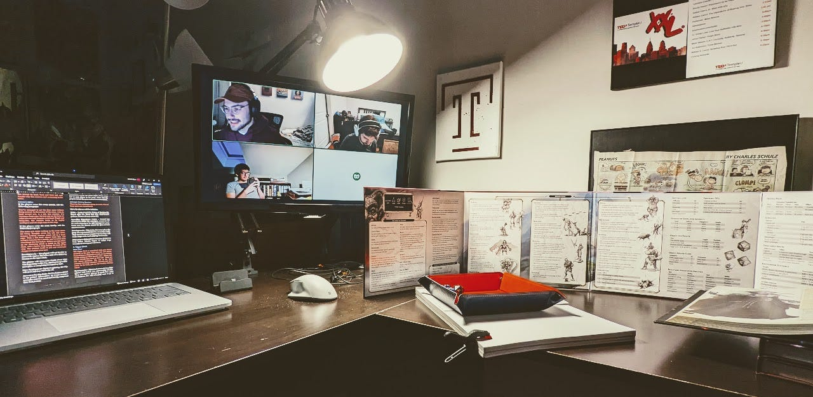

Crunch Time and Comforts
Near the end of every workweek, I fall for the hubris of creatives—believing weekends can be dedicated solely to being creative.
Around Thursday, I begin to think about the projects I want to tackle, maybe one or two, but by Saturday morning it all flies out the window. I’m reminded of the dishes that need to be washed, the laundry that needs folding and the groceries that need to be shopped for. Then more little things come up, leaving those two days planned for creative projects to be rushed and crunched into the new, much shorter time restraint.
What I’ve been doing to combat this is breaking the early stages of projects up to do in small increments during the week. If I want to design something, I might spend 10 – 15 minutes each night during the week filling a folder with inspiration. If I plan on writing, I may spend those 10 – 15 minutes reading or jotting down ideas. In both scenarios, when Saturday comes around, even if I lose half the day doing miscellaneous tasks, the research and preplanning I’ve done throughout the week will help get me in a creative mindset faster.
Comfort books
I often get in conversations with friends about the concept of re-reading books. As someone who rarely reads non-fiction, re-reading to me is similar to re-watching a television show. Just like with television shows or movies, I can gain new insights, find easter eggs, or rediscover things I loved about characters over again.
I’ve read books where I can jump in at a random chapter because I’ve read it a number of times before, almost like re-watching a favorite episode. Sometimes I’m in the mood to just re-experience a moment in a book, rather than start a new one from scratch, trudging through exposition.
Here are a few books I find myself easily jumping back into:
- Malicroix by Henri Bosco — a young man inherits his mysterious uncle's remote house on a wild island, where he must fulfill a cryptic will while confronting solitude and his own inner demons.
- Killing Commendatore by Haruki Murakami — a portrait artist, isolated in the mountains, embarks on a surreal journey involving a hidden painting, a mysterious bell, and the exploration of art, history, and the subconscious.
- The Cheese Monkeys by Chip Kidd — set in the late 1950s, this novel follows a college student's transformative experience in a graphic design course, taught by an enigmatic and unconventional professor.
- A Little Life by Hanya Yanagihara — chronicles of a decades-long friendship between four men in New York City, focusing on their trials and the haunting past of one of the friends, Jude St. Francis.
- The Giver by Lois Lowry — in a seemingly perfect but colorless world, a young boy named Jonas discovers the dark and complex truths of his community when he is chosen to inherit the position of Receiver of Memories.
- Bone by Jeff Smith — a comic series following the Bone cousins as they navigate a mysterious valley filled with wonderful and terrifying creatures, gradually uncovering their own heroic destinies.
- S. by J.J. Abrams — a multi-layered novel within a novel combines marginalia from two readers with the text of a mysterious book called "Ship of Theseus," resulting in a unique, interactive puzzle that blurs the lines between authors, characters, and readers.


Finishing up a tabletop campaign
During COVID, my former roommates and I began playing Dungeons and Dragons together, first playing through the Starter Kit before creating our own campaigns. Most campaigns lasted a handful of sessions, giving us minimal characters arcs but a lot of fun mechanics to play through.
Two years ago, I created a campaign called “Into the Westfall Valley,” which is loosely based on the Bone comics, or at least the setting. We completed 20+ sessions until we took a pause last July. I was coming up on the last leg of my master’s program, as well as the last leg of the campaign. I asked we take a break through the rest of 2023, but we have yet to return to it, primarily because I haven’t been able to prep enough of the campaign—more specifically, coming up with an ending.
Last night I finally found the time to sit down and finish the campaign. Well, “complete” is the wrong word, because it’s the PCs who get to live out the ending of the campaign their way, but I have further developed NPC storylines, designed more in-game locations and prepped enough for my friends to complete their journey. Next week will see the return of our sessions.
